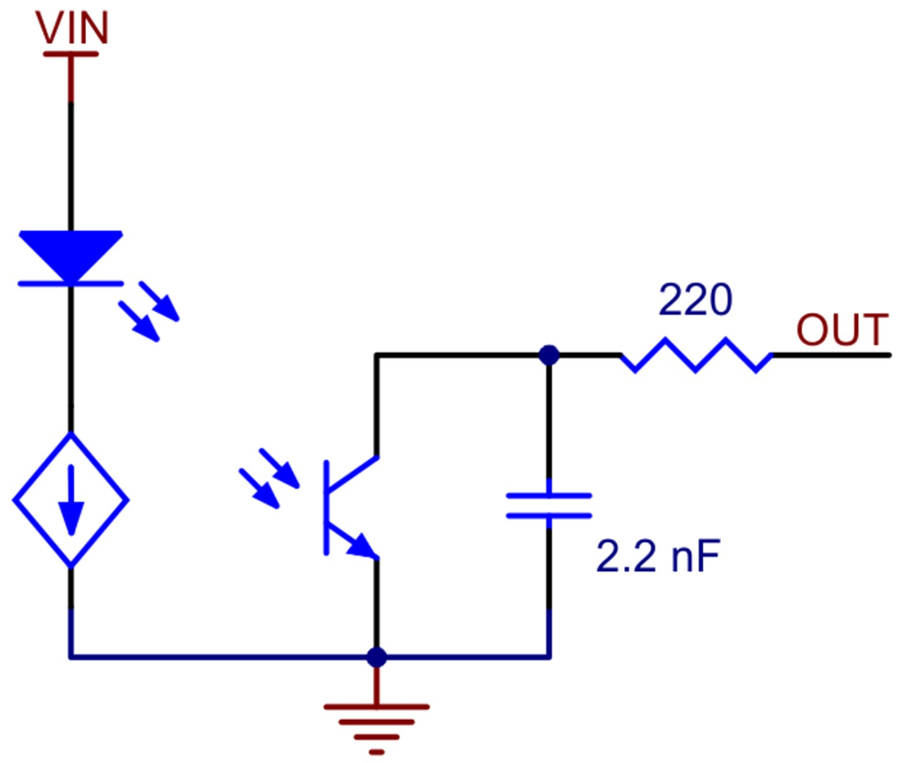

The following table provides an overview of the hardware used on this Romi Chassis.
| Quantity | Part | Provider |
|---|---|---|
| 1 | STM32 Nucleo-L476RG | ME405 Instructor |
| 1 | Shoe of Brian | ME405 Instructor |
| 1 | Romi Robot Kit | ME405 Instructor/Pololu |
| 1 | BNO055 IMU | ME405 Instructor |
| 2 | Bumper Switch Assembly for Romi/TI-RSLK MAX | Pololu |
| 1 | 8-Channel QTRX Sensor Array for Romi/TI-RSLK MAX | Pololu |
| 1 | Small Breadboard | ME405 Instructor |
There were no custom components that were 3D printed or machined used on this Romi chassis. The means of attaching the line sensor and bumper switches comes with purchasing the components from the provider.
Components
Wheels
Wheels
The Romi Chassis comes with a pair of DC motors and encoders and wheels. These motors have a gear ratio of 120:1 and the encoders operate with 12 Cycles Per Revolution. The encoder information was used in a proportional feedback loop to control the wheel speed of each motor. The feedback loop is shown below.
Block diagram for the proportional controller used by each motor.
Here, we read the output rotational speed of each motor and then compare it to our target reference rotational speed. We then scale this error value by the motor’s specific proportional gain constant. This process can be seen in equation form below.
L = K_p (Ω_ref - Ω_meas)
This value gives us the percentage to either increase or decrease our duty cycle by to approach our target reference speed.
We determined our initial proportional motor gain graphically by measuring the steady-state operation speeds of each wheel at various duty cycles. We then used this data to find the linear relationship of duty cycle to operation speed, which is our proportional motor gain. We did this for each motor.
Graphically determined proportional gain of motor.
Left Motor:
Right Motor:
These graphically determined values served as our initial guess for our proportional gains, but we refined the values to meet the specific needs of our chassis system. We tested how the Romi system operated with both motors running at the same prescribed speed. We found that one of the motors had a faster response and would gain higher, causing our system to stray off a linear course even in a short distance. Through tuning, we adjusted the two gains of each motor such that the Romi system could travel in a straight line over six feet. Tuning was necessary because we graphically determined the gains while only running one wheel at a time with no load. When both wheels are operating with a non-zero load, the dynamics of the system change, and tuning is required. Additionally, we found that since the motors are operating under DC power, there is a noticeable power drain during the duration of the test we ran. This can be observed by the non-linear behavior at the extreme ends of both figures. We were unable to linearize this trend and were unable to determine if it provided significantly significant changes to our results. If we had more time, or someone else was running a similar project, we would find a way to linearize this trend so we could obtain a more accurate proportional gain initial guess.
This feedback loop is used independently by each motor for the duration of the challenge course. Other sensors and environmental interactions adjust our target reference speed, but this loop regulates our actual wheel speed.
Because we only incorporate proportional control in our feedback, we are operating with some steady-state error. The reason we chose to only have proportional control is because we found that it was all that was needed to complete the challenge course. Because it was not necessary, we decided to devote more time to other components of the project. This decision was fueled by ideas of practical design, where we tried to minimize our code and simplify our design as much as possible while still being able to complete the challenge course. This would allow us to more easily scale our project for mass production if ever needed.
If an application required zero steady-state error, then integral and derivative control would need to be added to the feedback loop. We wrote our code in such a way that this can easily be added once the integral and derivative components are determined.
Line Sensor
Line Sensor
We used the 8-Channel QTRX Sensor Array by Pololu for our system’s line sensing capabilities. This sensor is designed specifically to be used with the Romi chassis and does not need additional hardware to be configured onto the chassis. It can be attached under the chassis into the slots immediately in front of the battery port.
Each of the eight sensors is an iRC sensor. The process to read these sensors is not the most intuitive to implement into code, so we would suggest that if you have the ability to use a non-iRC line sensor, then do so. The iRC sensor works by emitting an infrared light to the environment. While doing so, it charges a capacitor that is connected to the circuit. Then the power is disabled, and the infrared light no longer emits. A photoresistor is then affected by the amount of light that is reflected from the environment. The capacitor discharges at a variable rate that is dependent on the resistivity of the photoresistor. A diagram of the iRC circuitry is shown below.

To implement this into our code, we first enabled the input voltage, which causes the infrared light to emit and the capacitor to charge. When we disable the input voltage, we begin to measure the amount of time it takes until there is no longer current out in nanoseconds. This amount of time is the time it takes the capacitor to discharge, which is directly determined by the amount of light that is reflected to the phototransistor by the environment. If the measured time is a low value, then the immediate environment is white or blank; if the measured value is a high value, then the immediate environment is black or dark.
To follow a line, we use the array of sensors to give us a signed weighted value that modifies our target velocity for both wheels in a feedback loop. If a line sensor that is farther out reads a value corresponding to black, we are more off course than if a more central line sensor is triggered. Because of this, we weighed the outermost line sensors more than the innermost sensors. Initially, we used a linear weighting scale, where the outermost had four times the weight of the innermost sensor, but found through testing that this did not allow us to follow quick and low-radius turns. In order to correct this, we refined the sensor weights through a series of tests that resulted in the outermost sensors being much more heavily weighted than the inner sensors.
We also incorporated directional information into the feedback loop using the array of sensors. We know that if a sensor on the left side is triggered, we must run right to get back onto the line, and vice versa. This informed us to add signs to our weighted values. All sensors on the left side of the chassis are negative values, while the right sensors are positive values.
We tested our line sensors on the challenge path and determined the output values that correspond to white and black readings. We then modified our line sensor code to output a Boolean response. We implemented it by setting an initialization value and then performing integer division on the output time value. This allows us to easily update the initialization value if we change course locations, line colors, or time of day. Once we have a Boolean for each line sensor, we read the array of sensors where the index of the array corresponds to the location on the chassis. We then multiply the Booleans by their corresponding signed scales and add all the signed scales values. Once we have this value, the magnitude determines the amount of change each wheel undergoes from a prescribed base velocity. The sign on the value then determines which wheel increases speed and which one decreases speed in a logic loop in the code.
Block diagram for the controller used to adjust wheel speed based on line sensor readings.
After testing this feedback, we found that at small radius turns, our Romi would “spin out” because one of the wheels would be going backward at a high speed while another was going forwards. This caused high amounts of slip and would move our chassis off-course. To address this, we added a logic step in our code that ensured that neither wheel would ever have a negative velocity. This helps prevent “spinning out” and allows our robot to be continuously moving forward.
We also used our line sensor to track when we have completed the challenge course. At the finish line, we move from reading sensor values where at least one is high (black) to reading where all are low (white). Because we know the components of the course, we know the number of times that this happens throughout the course. We have a count variable that counts the amount of time this specific line sensor Boolean change happens and informs us when we have reached the finish. It then sets a flag that informs our system to complete the finish sequence and return to its starting position.
Bump Sensor
Bump Sensor
The challenge course consists of an obstacle- a box- that must be detected and navigated around. We used the left and right bumper switch assemblies by Pololu created for the Romi chassis specifically. We were able to attach these sensors directly to the front of the Romi chassis with the hardware that came with each bump sensor.
There are six switches in total between the two assemblies. Each switch can be programmed and configured to operate a unique task when pressed. However, because we know the specific use case and course rules, we only needed to configure and program the two front most sensors. This keeps our overall assembly cleaner with fewer wires and can help prevent wasting computing power if we don’t need it.
When one of the front two switches is pressed, it disables the line sensing capabilities of the Romi and starts an obstacle navigation sequence. The motor speed feedback loop is still enabled during this sequence. The steps of the sequence with descriptions are shown in the table below.
| Sequence Step | Step Name | Step Description | Next Step Condition |
|---|---|---|---|
| 1 | Back Up | The Romi moves backward at a set speed. The amount it moves back is pre-set and measured by the wheel encoders. | When the change in encoder ticks is equal to the preset amount, it proceeds to the next step. |
| 2 | Turn 45° | The Romi rotates 45° clockwise. This is measured using the Heading Euler Angle read from the IMU. | When the change in heading equals 45°, proceed to the next step. |
| 3 | Go Straight 1 | The Romi moves forward at a set speed. The amount it moves forward is pre-set and measured by the wheel encoders. | When the change in encoder ticks is equal to the preset amount, it proceeds to the next step. |
| 4 | Turn 90° | The Romi rotates 90° counterclockwise. This is measured using the Heading Euler Angle read from the IMU. | When the change in heading equals 90°, proceed to the next step. |
| 5 | Go Straight 2 | The Romi moves forward at a set speed. The amount it moves forward is pre-set and measured by the wheel encoders. | When the change in encoder ticks is equal to the preset amount, it proceeds to the next step. |
| 6 | Arc Path | The Romi moves along an arc path of a pre-prescribed radius. Here, the line sensor is re-enabled but not the control loop for the Romi to follow the line. | When the line sensor array has any of its Booleans set high proceed to the next step. This means the step proceeds whenever a line is detected. |
| 7 | Turn 60° | The Romi rotates 60° clockwise. This is measured using the Heading Euler Angle read from the IMU. | When the change in heading equals 60°, exit the bump sensor sequence and re-enable line following capabilities. |
After the above sequence is completed, the Romi returns to its line following capabilities and completes the rest of the course.
IMU
IMU
Our Romi is equipped with a BNO055 Inertial Measurement Unit (IMU). The IMU is capable of recording data such as cardinal directions and local accelerations, but for the scope of this project, we will only be using the heading measurements that are provided by the IMU. We used a class of commands that we found online(see references page). please see the references page for the link to the repository. This class returns to us Euler Angles, one of which is heading. Throughout the challenge course, we use differential, or local, positioning to determine how much we need to turn. Because of this, we can use the heading that is provided to us from this class to determine our change in angle, since heading and angle differ by only a sign change. The IMU is used in the bump sensor sequence and the finish sequence.
The IMU is located on the back of the Romi chassis. It is placed in a breadboard and is stuck to the chassis via an adhesive.
Generated by